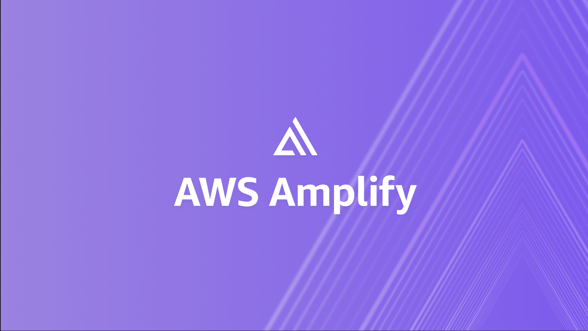

Hosting My Professional Portfolio Using AWS Amplify

Introduction
When I initially began constructing projects, I was overwhelmed with one major question: How do I present them professionally? Uploading notebooks to GitHub was acceptable, but it didn’t truly showcase my work. I wanted something that looked nice, professional, and was easy to distribute to employers.
That’s when I stumbled upon Quarto, a free open-source website-publishing platform that converts Markdown and code into finished websites. While it was a great start, I realized that having complete control over my content in a reliable location was crucial for my professional portfolio. That’s where AWS Amplify came in.
Why Quarto?
Quarto is simple yet powerful. It allows you to blend code, text, and visuals all in one location whether writing blog posts, data analyses, or research reports. For users in data science or analytics, it strikes the perfect balance between documentation and presentation.
Since I had worked with QMD files to analyze my data, I could turn them directly into interactive, modern web pages with Quarto. I didn’t have to learn web development from scratch; Quarto handled formatting, navigation, and layout. In just minutes, I had a site that resembled a publication rather than just a collection of notebooks.
Deploying to AWS Amplify
Once I completed my site on a local device using VSCode, I needed to host it. Free options like GitHub Pages were okay, but I preferred paid options that encouraged me to manage resources carefully.
AWS Amplify directly hosts projects tied to a GitHub repository, allowing automatic updates when I make changes to the website. This seamless integration meant no manual uploads or tedious setup steps were necessary. Version control and deployment complemented each other perfectly.
Initially, setting everything up was daunting. I had to create an Amplify app, link it to my GitHub repository, and double-check that the website looked correct after each installation. I learned valuable lessons through my mistakes and gained insights through my education.
Running my website on AWS isn’t just about visibility; it’s about marketing. I control how it looks, loads, and scales not limited by templates that restrict personalization. This technical independence showcases to employers that I go the extra mile and can demonstrate my professional skills.
How to Turn a Website into a Portfolio
As soon as my Quarto site was live, it completely transformed how I portrayed myself. Instead of directing people to separate notebooks, dashboards, or PDFs, I could share one URL that served as a digital home for all my work.
The site features links to my projects, blog posts, and an about section. Projects display my visualizations, models, and real-world analyses, while blog posts cover topics like networking on LinkedIn and deploying cloud services. The about page shares my journey and aspirations, weaving everything into one cohesive story. They convey not just what I’ve done but how I think.
The Professional Value it Offers
A portfolio on AWS does more than showcase projects; it demonstrates initiative. It shows that you can work with cloud infrastructure, deploy applications, and document your data work professionally.
For roles in data science, analytics, or engineering, having such a portfolio improves your prospects. Recruiters and hiring managers can readily assess your technical abilities and communication skills two key factors that help strong candidates stand out.
AWS is an actual cloud service, so hosting your portfolio there indicates familiarity with deployment and scaling crucial skills often overlooked by entry-level candidates.
Final Thoughts
Starting a Quarto site via AWS began as a personal exploration of a tool, but it soon evolved into a significant piece of my professional identity. It’s not just a portfolio; it’s a written memoir of personal evolution, exploration, and curiosity.
Building your own in data science, analytics, or any tech field is entirely feasible. Quarto and AWS together can transform your work into something substantial beyond a résumé. They turn it into proof of your capabilities.